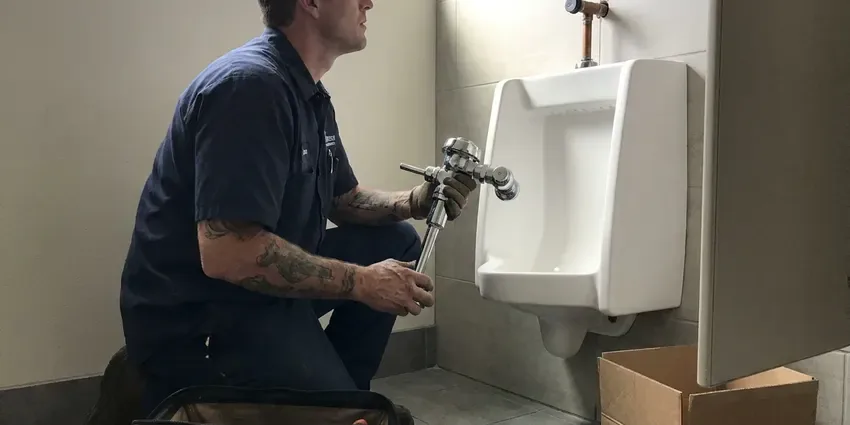

Sink Repair in Rock Hill, SC
For all your sink repair needs in Rock Hill, SC, you can trust KBN Plumbing to restore your kitchen or bathroom plumbing.
- Same-Day Sink Repair Visits
- Licensed South Carolina Plumbers
- Friendly, Local Plumbers
- Parts Carried on Every Truck
Reliable Sink Plumbing Solutions in Rock Hill, SC.
Our trained technicians are ready to tackle any sink problem you're facing, delivering lasting results.
Your First Call for Sink Repair in Rock Hill, SC
KBN Plumbing provides full-service sink repair throughout Rock Hill and surrounding areas in South Carolina. Whether you have a dripping faucet, a slow drain, or a completely backed-up sink, our licensed plumbers have the tools and know-how to diagnose and fix the issue quickly.
Our expertise includes:
- Repairing or replacing worn-out sink components
- Reset loose undermount and vessel basins with new sealant
- Repairing leaky faucets and drains.

Additional Bathroom Plumbing Services in Rock Hill, SC
From toilets to showers, our bathroom plumbing team in Rock Hill, SC repairs, installs, and replaces every fixture with clean, code-compliant work.


Customers
Why Choose KBN Plumbing for Sink Repair in Rock Hill, SC?
Choosing the right plumbing company for sink repair means a long-lasting fix and peace of mind. Our team is dedicated to providing efficient and effective service suited to the specific needs of your Rock Hill home.
- Skilled Technicians, Our plumbers are well trained and experienced in all aspects of sink repair, from simple fixes to complex issues.
- Honest Diagnosis, We show you the failed part before we replace a thing.
- Lasting Solutions, We don't just patch problems; we identify the root cause to ensure a durable repair.
Citywide Coverage
We repair bathroom sinks in every part of Rock Hill, from older homes with galvanized stubs to newer builds with PEX and plastic traps. Wherever you live in town, a plumber can often reach you the same day.
Experienced Team
Our plumbers have rebuilt thousands of pop-up drains and traps and know the quirks of brands like Kohler, Moen, Delta and American Standard. They can tell a supply-line leak from a faucet-body leak in minutes.
Safety-First Approach
We shut off water at the angle stops, test valves before reuse and replace any stop that will not seal. Repairs meet South Carolina plumbing code for trap seals and venting so sewer gas never enters your bathroom.
Trusted Certified Rock Hill Plumbing Services Professionals
At KBN Plumbing, we take pride in providing certified plumbing services throughout Rock Hill, SC. Backed by leading industry credentials, our experienced plumbers combine technical skill with genuine customer care. Whether it is repair, installation, or maintenance, we follow strict safety and quality standards to deliver long-lasting results you can trust.
Call Us Now PHCC Plumbing Contractor Recognition
PHCC Plumbing Contractor Recognition Better Business Bureau (BBB) Accreditation
Better Business Bureau (BBB) Accreditation Angi Certified Pro
Angi Certified Pro ISO 9001 Quality Management Certification
ISO 9001 Quality Management CertificationTrusted Sink Repair Services in Rock Hill, SC
Fixing Loose or Wobbly Sinks in Rock Hill
Over time, sinks can become loose or wobbly, especially if they are undermounted or pedestal styles. This can be due to failing caulk, loose mounting clips, or even issues with the countertop. Our plumbers in Rock Hill can re-secure your sink, ensuring it's stable and properly sealed to prevent water infiltration and further damage to your cabinetry or flooring.

Sink Repair vs Replacement Costs in Rock Hill, SC
A trap, stopper or supply line repair usually runs a fraction of the cost of a new sink. Replacement starts to make sense when the basin is cracked, the finish is badly etched, or the drain body is corroded into the bowl. We give you both prices when it is close so you can decide. Many customers save money by repairing now and planning an upgrade later.
Loose or Cracked Basin Repair in Rock Hill
Undermount sinks are held by clips and epoxy that can let go, leaving a gap and a leak along the counter. Vessel sinks can rock on a worn mounting ring, and older porcelain basins can crack around the drain. We reattach, reseal or replace the basin as needed and recaulk with a mildew-resistant silicone. We will tell you honestly when a crack means replacement is the better value.
Clogged Sink Drain Repair in Rock Hill, SC
A slow or completely blocked sink drain is a common nuisance in Rock Hill homes. This can be caused by grease, food particles, hair, or even mineral buildup from hard water. Our plumbers use professional tools like augers and hydro-jetting equipment to safely and effectively clear even the toughest clogs, restoring proper drainage to your kitchen or bathroom sink in South Carolina.
Supply Line and Shutoff Valve Repair in Rock Hill, SC
Braided supply lines and angle stops are rated for years, not decades, and the rubber inside breaks down in warm cabinets. A failing line can burst without warning and flood a bathroom. We replace worn lines with stainless braided connectors and swap stuck multi-turn valves for quarter-turn stops. It is a small job that prevents a very expensive one.
Sink Water Pressure Issues in Rock Hill, SC
Low water pressure at your sink can be annoying and indicate underlying plumbing problems such as mineral buildup in the aerator, faulty faucet cartridges, or even larger issues within your home's water lines. Our technicians in Rock Hill, SC can accurately diagnose the cause of low pressure and make the necessary repairs to restore full water flow to your sink.
Outdoor Sink Repair in Rock Hill
Outdoor sinks, commonly found in utility areas, garages, or outdoor kitchens, are exposed to different elements and usage patterns. Hard freezes are infrequent in South Carolina, but a few nights each winter can drop well below freezing, especially in the upstate. They can also develop leaks from sun exposure or fittings that loosen over time. KBN Plumbing repairs issues specific to outdoor sinks, including hose bib leaks, utility faucet malfunctions, and drain clogs from yard debris. We ensure your outdoor plumbing is ready for any season.

Emergency Sink Leak Repair in Rock Hill
A burst supply line or a broken trap can put gallons on the floor in minutes. If you cannot stop the water at the angle stops, shut off the main and call us. We prioritize active leaks and carry the parts to stop them on the first visit. We also check the vanity floor and wall for moisture so damage does not spread.
Sink Repair Near Me in Rock Hill, SC
Our commitment to the Rock Hill community means we're never far away when you need expert sink repair. We understand the plumbing challenges faced by homeowners in South Carolina, providing tailored solutions that last. Just give us a call at (864) 588-3813.
Looking for 'sink repair near me' in Rock Hill, SC? KBN Plumbing is your local plumbing expert, just a call away. Our technicians are conveniently located to provide rapid response times throughout the area, so your sink issues are addressed quickly and efficiently. We are committed to serving our community with dependable plumbing solutions.
KBN Plumbing at a Glance
- Licensed and insured plumbers serving Rock Hill, SC
- 24/7 emergency service with same-day scheduling
- Upfront, flat-rate pricing before work begins
- 4.8-star rated by 596+ South Carolina customers
Rock Hill Map
Rock Hill Information
- Population
- 75,654
- Area codes
- Local
- Service area
- Rock Hill and communities within 40 miles
- Nearby
- Fort Mill, Spartanburg, Columbia, Greer
Private wells are common outside town limits, and some South Carolina well water carries iron, low pH or sediment that can stain fixtures and wear down water heaters. Regular sink maintenance and prompt leak repair help prevent mineral buildup and extend the life of the plumbing fixtures in Rock Hill, SC homes.
Expert Services
Trust our professionals for reliable KBN Plumbing solutions in Rock Hill, SC.
Our Specialized Plumbing Services in Rock Hill, SC
At KBN Plumbing, we provide a complete range of plumbing services across Rock Hill, SC. From leak detection to full system installations, our team ensures fast, precise, and affordable service for both residential and commercial properties. Explore our core services below:


How Our Sink Repair Process Works in Rock Hill, SC
We've streamlined our sink repair process to make it as convenient and stress-free as possible for homeowners in Rock Hill. Here's what you can expect when you choose KBN Plumbing.
Request a Quote
Call (864) 588-3813 and describe what the sink is doing. We schedule a time that works, often the same day.
Diagnose the Problem
Your plumber checks the trap, drain, supply lines and basin to find the true source. You get a flat-rate price before work begins.
Repair and Test
We make the repair with quality parts and run water at full flow. We confirm there are no drips and clean up before we leave.
Frequently Asked Questions About Sink Repair in Rock Hill
The cost of sink repair in Rock Hill typically ranges from $150 to $400, depending on the complexity of the issue. Simple fixes like clearing a minor clog might be on the lower end, while repairing a complex leak or replacing a faulty garbage disposal could be higher. We provide transparent, upfront pricing after diagnosing the problem.
While minor clogs or replacing an aerator can sometimes be a DIY project, most sink repairs, especially those involving leaks, disposal issues, or complex clogs, are better handled by a professional. Improper repairs can lead to greater damage, water leaks, or code violations in South Carolina homes.
Private wells are common outside town limits, and some South Carolina well water carries iron, low pH or sediment that can stain fixtures and wear down water heaters. Hard water leaves scale that stiffens pop-ups, clogs aerators and wears valve seals faster, and it can etch some sink finishes over time. Regular cleaning and a water softener both help.
Yes. Our labor is guaranteed and most replacement parts carry the manufacturer's warranty. We will explain the coverage on your paperwork.
We stock parts that fit Kohler, Moen, Delta, American Standard and other common brands. For specialty or designer sinks, we can order compatible drains and finishes.
Most minor sink repairs, like fixing a leaky faucet or clearing a simple clog, do not need a permit in Rock Hill. However, if the repair involves significant alterations to the plumbing system, relocating a sink, or replacing major drain lines, a plumbing permit may be necessary. We will advise you if a permit is required for your specific repair.
We recommend against it. Caustic cleaners can damage older metal traps and rarely clear hair clogs completely. A hand auger and a cleaned stopper work better and are safer.
To prevent future sink issues, avoid pouring grease down drains, use drain strainers to catch food particles and hair, and run hot water for a minute after using your sink to help clear residue. Regular plumbing inspections can also catch small problems before they turn into major repairs.
What People Are Saying About Our Plumbing Experts?

Daniel K.
A pipe burst at 11 pm and they actually answered. The plumber showed up within the hour, shut everything down, and had us back to normal the next morning. Could not ask for more.
Emergency Plumbing · Spartanburg, SC
Laura S.
I scheduled a water heater replacement, and the team made the process smooth and affordable. The new unit works perfectly, and they cleaned up after completing the job.
Water Heater Replacement · Rock Hill, SC
Emily R.
I called KBN Plumbing for plumbing repair, and the technician was fast, polite, and thorough. They explained the problem clearly and fixed it the same day. I will definitely hire them again. Highly recommended!
Plumbing Repair · Greenville, SC
James P.
Our commercial plumbing system had a leak under the sink, and KBN Plumbing handled it professionally. The plumbers arrived quickly and restored everything without disruption to our customers.
Commercial Plumbing · Fort Mill, SCRobert G.
The trenchless sewer replacement saved our front yard. They walked us through the camera inspection footage first so we knew exactly what we were paying for.
Sewer Line Replacement · Columbia, SCSofia M.
Two new toilets installed in one visit, no mess left behind, and the tech even adjusted a faucet he noticed was dripping. Fair pricing and really friendly.
Toilet Installation · Spartanburg, SC